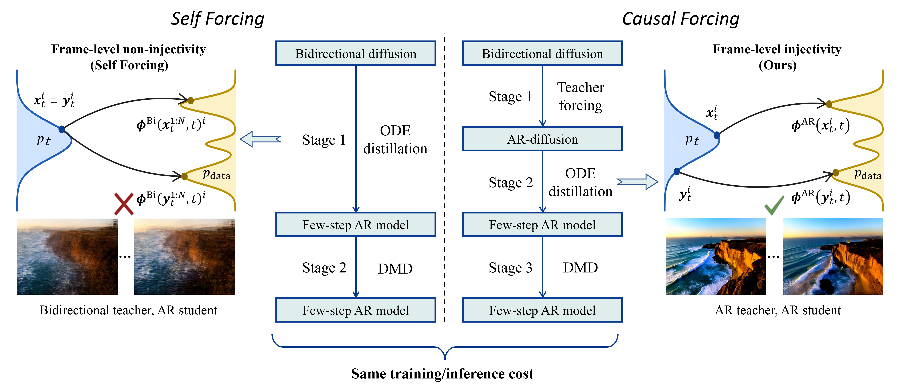

Causal Forcing significantly outperforms Self Forcing in both visual quality and motion dynamics, while keeping the same training budget and inference efficiency —enabling real-time, streaming video generation on a single RTX 4090.

We identify a theoretical flaw in Self Forcing’s training pipeline during ODE initialization: a bidirectional teacher should not be used to supervise an autoregressive student, as this violates frame-level injectivity. Motivated by this analysis, we propose Causal Forcing: we first fine-tune a bidirectional base model into an autoregressive diffusion model, then use it as the teacher for ODE initialization, followed by the same DMD stage as in Self Forcing. Our method significantly outperforms Self Forcing in both visual quality and motion dynamics, while keeping the training budget and inference efficiency unchanged.
@misc{zhu2026causalforcingautoregressivediffusion,
title={Causal Forcing: Autoregressive Diffusion Distillation Done Right for High-Quality Real-Time Interactive Video Generation},
author={Hongzhou Zhu and Min Zhao and Guande He and Hang Su and Chongxuan Li and Jun Zhu},
year={2026},
eprint={2602.02214},
archivePrefix={arXiv},
primaryClass={cs.CV},
url={https://arxiv.org/abs/2602.02214},
}